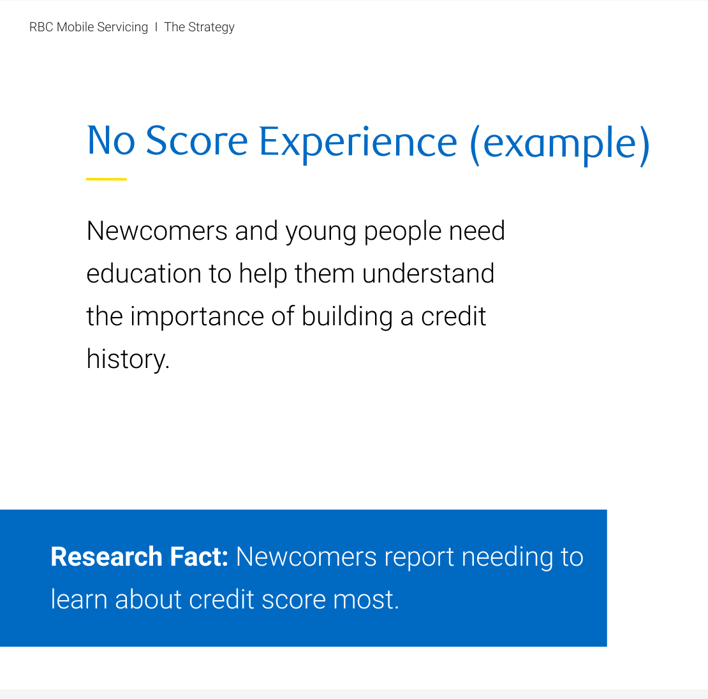
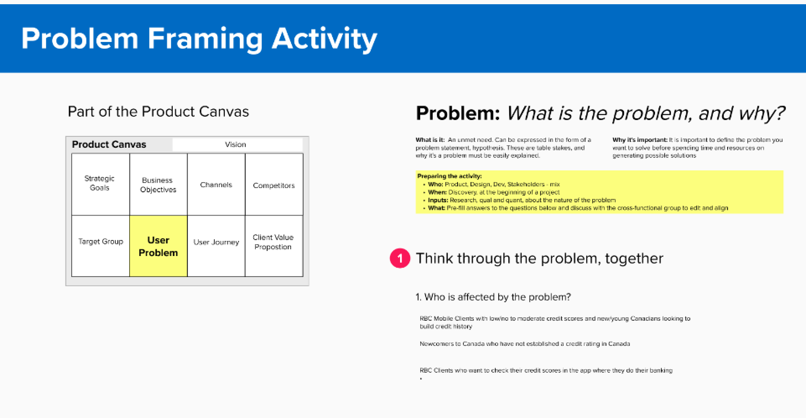
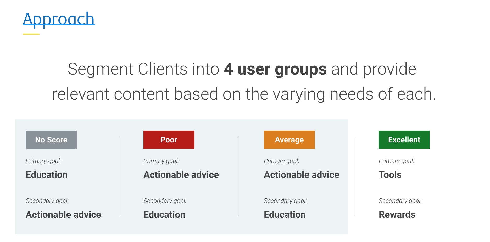
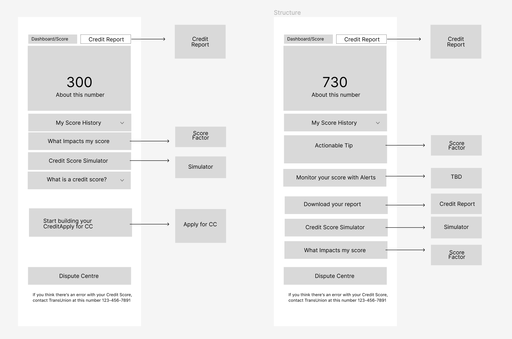
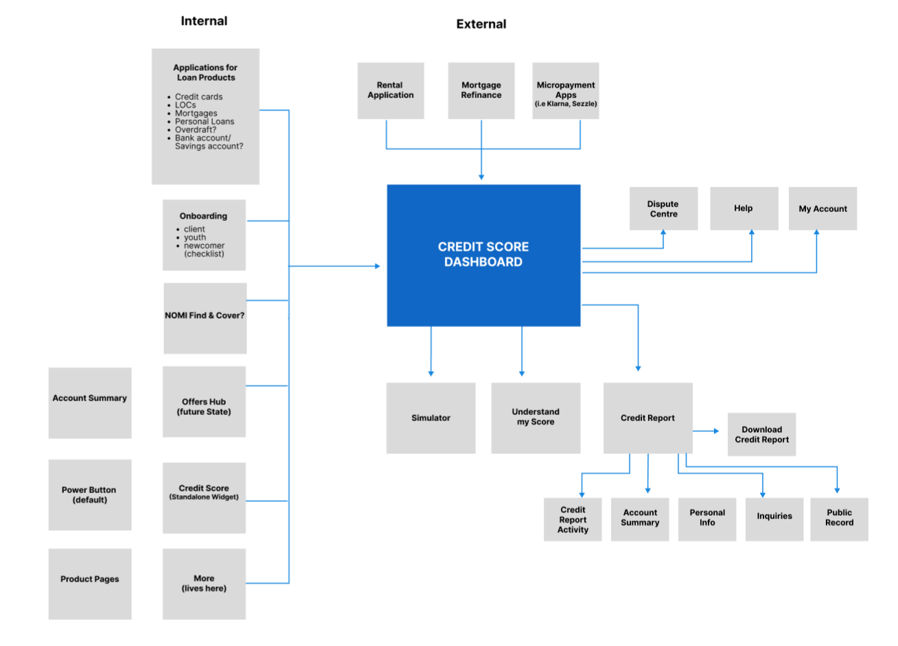
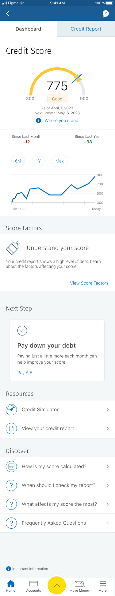
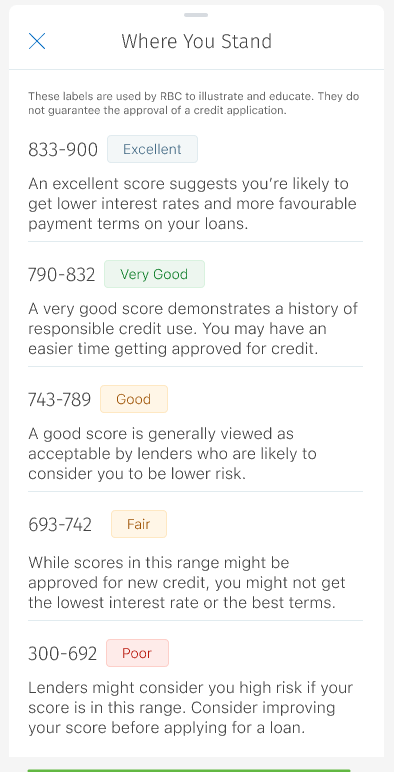
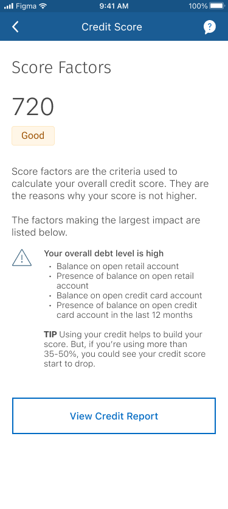
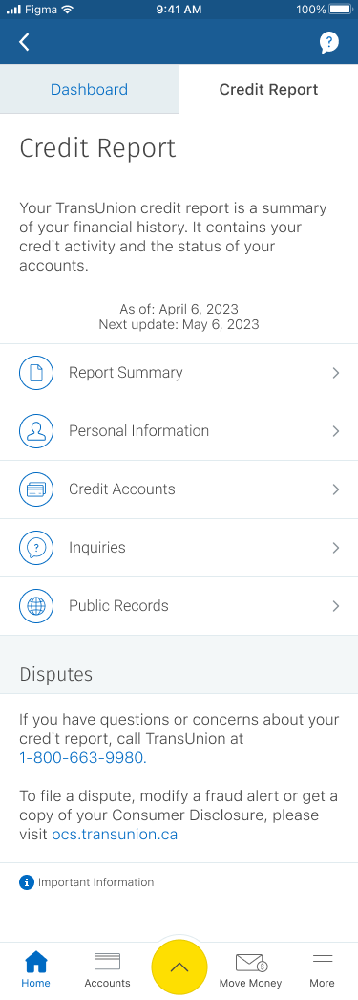
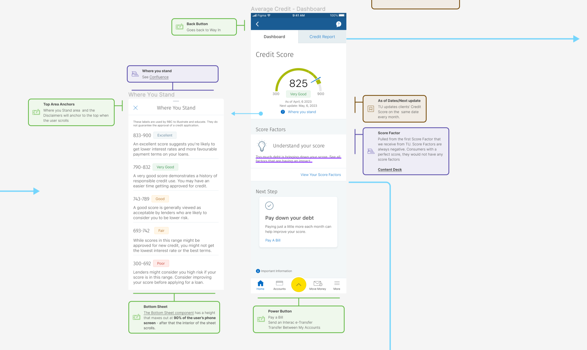

Project Overview
RBC was the last of the Big 5 Banks to NOT offer their Mobile customers a way to Check Your Credit Score within the app.
And it was also the most requested feature!
Problem
People with low/no credit score and newcomers to Canada have a lot of shame, anxiety and misunderstanding surrounding credit.
Also, customers with good credit have no way of managing it other than through a sub-par desktop experience.
We began the project with a Knowledge Harvest to uncover any existing projects done at the bank that could be leveraged. At the same time we worked with Research to learn more about behaviour and customer relationships with Credit in their lives. We also spoke with Customer Centre and Advisors to learn more about what issues they were seeing with customers and their credit.
In parallel with the above work, we did an exhaustive Competitive Analysis to see what other financial institutions were offering and explored stand alone Credit apps like Credit Karma and Borrowell. And finally we looked at the Data from the Desktop experience and worked with Transunion to gain any insights from their experience with other clients.


Journeys & Personas
What became apparent quickly in Discovery was that there were 4 personas we were working with. Which meant mapping out 4 different User Journey since how they entered the experience and where they might jump off to from it differed greatly as a result of where they were at in their Credit journey.
We decided to also run an Assumption Slam to see where the gaps were in our knowledge and identify what risks there might be. This led us to conclude that a personalized experience was the best approach, since our personas had different needs and education around Credit. And finally we ran a Product Canvas session to synthesize our 4 customer problems and ensure that they all aligned with Business goals.
Key Insights
- Customers had a lot of shame/anxiety surrounding credit
- Some were aware of the issue but ignored it or buried their head in the sand
- Alot of misconceptions around Credit
- Newcomers came from places where there was not even a concept of Credit

Wireframes & Usertesting
With a solid solution in mind, we began to meet with our Development team in order to begin scoping our features and prioritize what would be feasible to deliver for MVP vs down the road.
Using Figma, we began translating sketches into low-fidelity wireframes. We developed 4 sets based on the 4 user groups and decided to focus our attention on the low/no credit scenario as it was the most frequent use case for Credit Score. We presented our findings along with the wireframes to the development team, and then worked with Product to prioritize features and scope out what could be delivered for MVP versus what would be backlogged.
Additionally we conducted First-click test for Entry Points and conducted user interviews around customer expectations for the Credit Score Dashboard.


Mapping It out
With a clearer idea of client problems and expectations, we focused our attention on mapping the experience prior to entering Credit Score, what the user might do within the experience and possible actionable steps they might take after.
We presented our Vision work from Discovery and Define, and worked with Product to prioritize the Low/No Credit score users and began the final stage.
Empower customers with the Education & Tools to responsibly manage their credit.
Dashboard
With Scope of the project coming into clarity we began working on the Designs. While some features of the experience, namely the Credit Report itself, was mired in technical discussions with Transunion, we decided to focus our attention on the Dashboard.
We wanted to add a little delight to a potentially stressful experience, so we proposed adding some motion to the Credit Score Dial and focused on making the Dashboard as clear and light as possible. Users looking for a more in-depth analysis could drill down, but the initial interface was minimal and easy to understand. Best of all, we leveraged existing components from our Design system, allowing more time to add some of the delightful pieces.




Scoping. Descoping. Mapping it all out.
We spent a fair amount of effort refining and testing the Dashboard to ensure users understood what the Dial indicated. Apart from some confusion around the mid-point of the credit dial, the Dial tested extremely well, which allowed us to focus on other areas of the experience, namely the Credit Report and simplifying how Score Factors were showcased.
Both features were clunky and hard to digest on the Desktop. We worked closely with the RBC dev team and Transunion to simplify the experience, and use language that someone with little understanding of Credit could appreciate. Things were going smoothly, when elements of the project got Descoped.
Rather than panic, we worked with our Product partners and Research to identify the key elements needed for MVP launch. We prioritized the Dashboard and the Credit Reports and put a pause on the Educational components and the Simulator.
Final steps included mapping out Error flows, exploring ways in which to alert users of this new feature and spending an unexpected amount of effort mapping out the fields for the Credit Report which was very dense and unclear for the average person.

Learnings
- 01
Expect delays when working with External Vendor
There were lots of challenges working with an external vendor and their API, including mapping out data fields and getting clarity as to which fields are essential.
- 02
Engage with Devs Early.
We had to drop educational elements from the MVP as well as the Credit simulator as scope changed during the project. We needed to make sure there was sufficient resources for clients upon launch. Visual elements such as the graph were also dropped.
- 03
Lots of myths and misunderstanding around Credit.
There is a lot of heavy emotions surrounding Credit which leads to misunderstanding and problems. Finding ways to simplify, de-stigmitize and ultimately empower users are key metrics which we aim to track and react to as we continue to build out this experience.